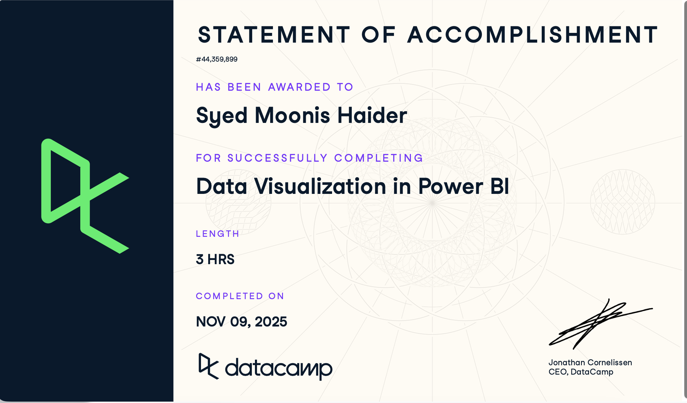
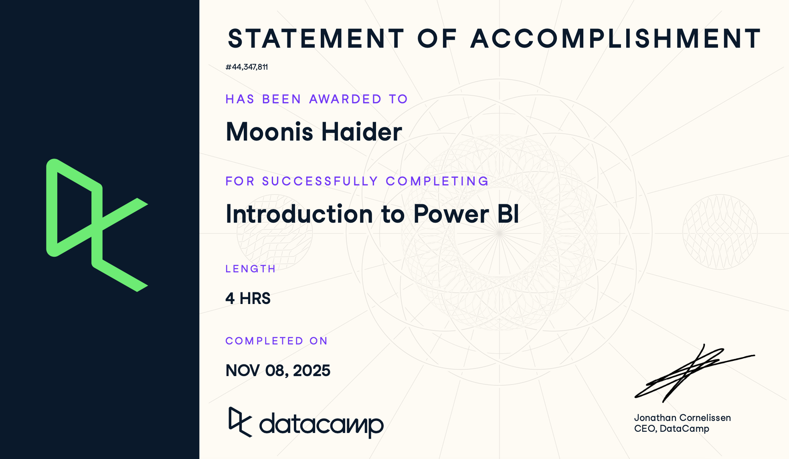

SYED MOONIS HAIDER
Architecting Agentic Systems
AI/ML Engineer specializing in Agentic RAG, Enterprise Automation, and Predictive Intelligence. I bridge the gap between raw data and autonomous decision-making.

SYED MOONIS HAIDER
AI/ML Engineer specializing in Agentic RAG, Enterprise Automation, and Predictive Intelligence. I bridge the gap between raw data and autonomous decision-making.
/ 01. Works
The Agentic Second Brain. A self-evolving RAG system using multi-agent orchestration to automate knowledge synthesis.
Pipeline for monitoring farms in Saudi Arabia. Processes satellite imagery for health metrics and asset tracking.
Multi-layered B2B lead intelligence and automated outreach pipelines powered by n8n workflows.
Domain-specific retrieval architecture for high-accuracy enterprise datasets.
Biometric classification system utilizing CNN, HOG, and SIFT features for high-accuracy signature recognition.
Optimizing flight routes using Genetic Algorithms to reduce fuel and adapt to real-time weather constraints.
Decentralized traffic e-challan system leveraging Solidity smart contracts and computer vision.
Deep learning sequential model built for real-time text prediction and pattern recognition using LSTM.
End-to-end microservices deployment with automated CI/CD leveraging AWS Academy standards.
ML pipeline for identifying high-dimensional outliers and securing data integrity.
/ 02. Technical Stack
Upwork AI Automation Specialist
Engineering production-ready RAG pipelines and n8n-powered automation for international clients. Specialized in fine-tuning LLMs, vector database optimization (Milvus/Pinecone), and integrating autonomous AI agents into enterprise B2B workflows.
Techno Storm Studios
Developed core machine learning models and computer vision applications. Focused on optimizing model performance and deploying scalable AI solutions within enterprise environments.
FAST NUCES
Assisted in delivering course content for technical computing and machine learning modules. Mentored students on algorithmic complexity and AI project development.
/ 03. Credentials

Microservices and CI/CD Pipeline Builders

Expert-level data storytelling and dashboarding

Foundational data modeling and analytics
04. Contact
I'm currently open to new opportunities. Whether you have a question or just want to say hi — my inbox is always open.
Say Hello